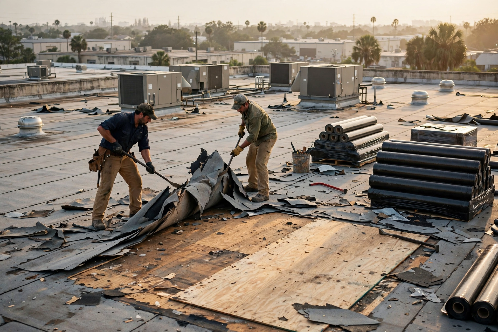
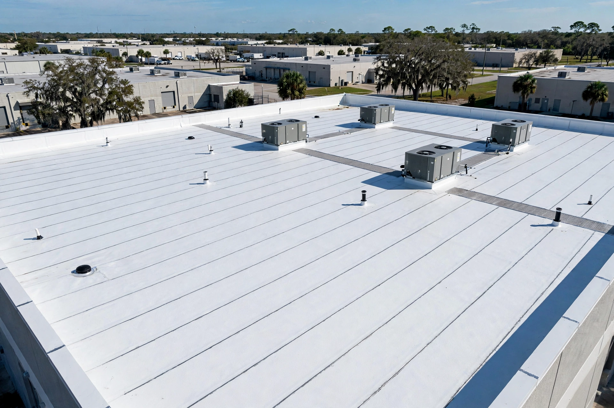
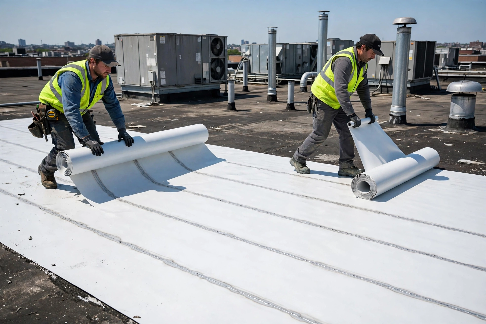
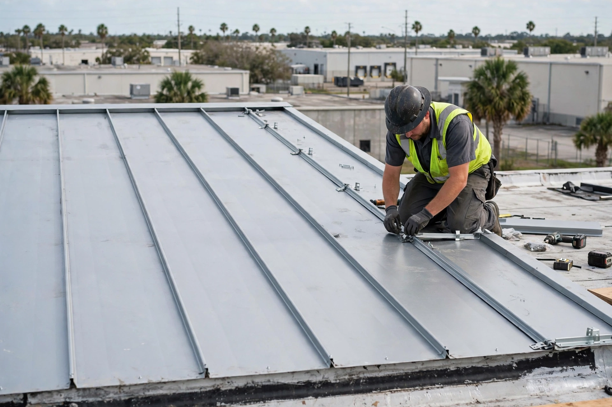
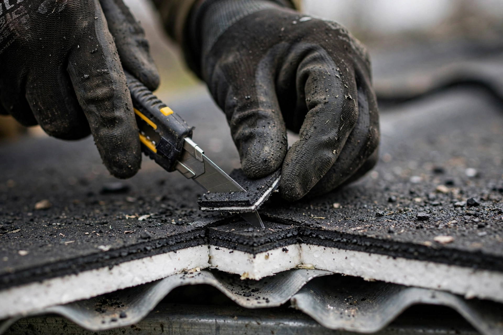

CASE #62-014
1960s
Warehouse
Ybor City
Re-roofed 1968, built-up system
STILL DRY
CASE FILE OPEN — COMMERCIAL RE-ROOFING · TAMPA BAY
Commercial re-roofing since 1960 — tear-offs, recover systems, metal retrofits, built-up roofs. Tear-off re-roofs from $9/sq ft. Written estimate in 48 hours.
EST. 1960 · 65+ YEARS ON TAMPA ROOFS · LICENSED & INSURED
The five-year roof company won't be here in year six. We're on year sixty-six.
Prefer to talk? Call (813) 251-5252 — Sue answers the phone.


JOB RECEIPT — NO LOGO WALL, JUST PROOF
Result: dry through the summer storms, no callbacks.
"They re-roofed around our forklifts — we never shut down."
D. Mercer, facilities manager · Illustrative
4.7★ · 200+ reviews across Tampa Bay Illustrative
THE 65-YEAR DOSSIER
Seven decades of Tampa commercial roofs. We've re-roofed Tampa longer than some roofing companies have existed.
SCROLL
CASE #62-014
1960s
Warehouse
Ybor City
Re-roofed 1968, built-up system
CASE #74-033
1970s
Office block
Westshore
Re-roofed 1974, built-up system
CASE #83-117
1980s
School
Hillsborough County
Re-roofed 1983, modified bitumen
CASE #91-208
1990s
Retail strip
Carrollwood
Re-roofed 1991, modified bitumen
CASE #03-096
2000s
Medical clinic
Brandon
Re-roofed 2003, TPO system
CASE #12-141
2010s
Church
Seminole Heights
Re-roofed 2012, metal retrofit
CASE #26-—
2020s
Your building
Somewhere in Tampa Bay
The next file we open
Open it →Illustrative cases — real job records stay in the office, not on the website.
WHAT WE DO

Down to the deck, built back right. The full reset for roofs at the end of their life.
Open a work order →
Framed over your flat deck — a pitched metal roof on a flat building.
Open a work order →New membrane over a sound roof — often half the cost of a tear-off.
Open a work order →Torch-down and hot-mop, done the old way. The workhorse we started with in 1960.
Open a work order →Prices illustrative — every real quote is written, fixed, and in your inbox within 48 hours of the core cut.
SYMPTOM CHECK
THE RITUAL
If we haven't seen your deck, we haven't quoted your roof. The cut tells us the layers, the wet spots, the truth — and you get the photos, whatever they show.
Tom — foreman
"The roof tells you everything. You just have to cut it open and look."

HOW IT WORKS
We cut into your roof and photograph what we find — the layers, the wet spots, all of it.
Risk removed: no surprise upsells.
One number, line by line, in your inbox within 48 hours of the core cut.
Risk removed: the price is final.
We pull the permits, schedule the crew, and stage around your operation. You sign nothing until you approve the number.
Risk removed: you never coordinate a thing.
We walk the finished roof with you — drone photos included — before the final invoice goes out.
Risk removed: you pay when the roof is dry.
STRAIGHT ANSWERS
Most run $6–$14 per sq ft depending on tear-off vs recover, deck condition, and system. A 20,000 sq ft tear-off typically lands in six figures — which is exactly why we core-cut first and quote in writing within 48 hours, with the number fixed.
Yes, if the deck and insulation are dry. A recover skips the tear-off and often costs half as much. If the core cut finds wet insulation or two roof systems already stacked, we won't recover it — that's a roof built to fail.
Recover systems: 1–2 weeks. Tear-offs: 2–4 weeks. Metal retrofits: 3–5 weeks. You stay open — we stage around your loading docks and forklifts, and the building never sits exposed overnight.
Every re-roof carries a 10-year workmanship warranty in writing. Manufacturer system warranties up to 20 years are available on TPO and metal systems.
Yes — most of our work happens while you're open. We coordinate noisy tear-off days around your schedule, stage materials off your docks, and leave the site broom-clean every night.
Prices and warranty terms illustrative — confirmed in your written quote.
LAST PAGE OF THE FILE
Tell us about the building. We'll cut a core, take the photos, and put a fixed number on it within 48 hours.
No answer after hours? Leave a voicemail — the on-call tech texts you back within 15 minutes.